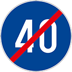
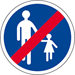
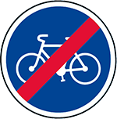
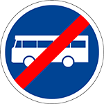
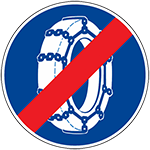
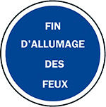
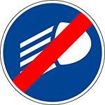
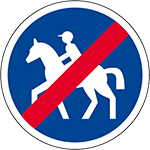
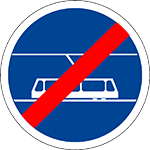
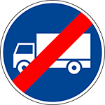

نهاية تحديد السرعة الدُّنيا الإجبارية
11 إشارة، كل وحدة بمعناها وبالصوت.
نهاية تحديد السرعة الدُّنيا الإجبارية

نهاية تحديد السرعة الدُّنيا الإجبارية

نهاية المسلك الخاص بالراجلين

نهاية الممر الإجباري لمستعملي الدراجات

نهاية الممر الإجباري لمركبات النَّقل الجماعي

نهاية إجبارية وضع سناسل الثلوج على العجلات

نهاية إجبارية تشغيل الأضواء

نهاية إجبارية تشغيل أضواء التقابل

نهاية الممر الإجباري للفرسان

نهاية المسلك المخصص للترامواي

نهاية المسلك المخصص للمركبات البطيئة